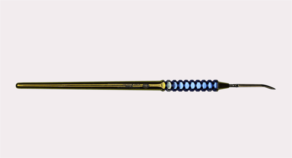

Онлайн школа маникюра Ирины Креминской
С 2000 ГОДА НА РЫНКЕ
ЛИЦЕНЗИРОВАННЫЙ УЧЕБНЫЙ ЦЕНТР
БОЛЕЕ 10 000 ВЫПУСКНИКОВ ПО ВСЕМУ МИРУ
3 ЗАПАТЕНТОВАННЫЕ ТЕХНОЛОГИИ
9 АВТОРСКИХ ПРАВ
МЕЖДУНАРОДНЫЕ КУРСЫ
ФРАНЧАЙЗИНГ
«Мы - лицензированный учебный центр CHANNAIL4. Наша специализация - анатомический маникюр. 20 лет мы проводили исследования, из которых вывели новые виды техник, позволяюшие работать анатомически.
70% успеха в работе с анатомией - правильный инструмент. Поэтому мы создали атравматичные инструменты, затупленные на фетре. Используя все в комплексе, вы научитесь работать анатомически.
У нас есть онлайн курсы. Мы приложили все усилия, чтобы исключить издержки удаленного обучения. Онлайн курсы СНANNAIL4 - это уникальная методика запатентованной технологии прямо у вас дома».
Ниже представлены наши выставочные образцы, которые мы используем при обучении на наших курсах.
 подробнее
подробнее
«Синусный слайсинг крючковыми ножницами»
Вы освоите новый запатентованный мокрый вид маникюра - «слайсинг». Научитесь работать крючковыми ножницами, делать идеальное покрытие глубже чем под кутикулу, и овладеете пятью видами комби.
Курс подходит как для абсолютных новичков в nail сфере, так и для мастеров с опытом, желающих освоить новую технику. Всех учеников, в независимости от стажа, ждет полная перезагрузка 100 % новизной.
Курс состоит из трех видео уроков. Пароль доступа к ним на 14 дней вы получите на почту сразу после оплаты.
«Титановый Blade с кутикульным слайсингом»
Вы освоите новый запатентованный мокрый вид маникюра - «кутикульный слайсинг». Погрузитесь в пленочную анатомию и научитесь работать по ней, сепарируя пленку кутикулы. Познакомитесь с авторской конвеерной техникой снятия за 4 минуты с двух рук. Увидите скоростной подпил за два движения пилкой. Откроете для себя новый анатомический инструмент-Titanium Blade и научитесь работать с ним.
Курс подходит как для абсолютных новичков в nail сфере, так и для мастеров с опытом, желающих освоить новую технику. Всех учеников, в независимости от стажа, ждет 100 % новизна.
Курс состоит из трех видео уроков. Пароль доступа к ним на 14 дней вы получите на почту сразу после оплаты.
«Мокасиновая стопа 2:0»
Вы освоите запатентованную технологию, новый мокрый вид педикюра - слайсинг. Узнаете, как анатомической работой запустить процесс приостановки роста околоногтевой кожи. Увидите, как из плоского валика сделать округлый и задержать этот эффект. Научитесь делать качественное покрытие глубже чем под кутикулу в авторской технике аnderвстык 1:0.
После курса вы поймёте, как делать глубокий педикюр с двойной носибельностью.
Курс подойдёт для всех мастеров, вне зависимости от стажа. Новый вид педикюра "Слайсинг - 100% новизна абсолютно для всех. Пароль доступа к уроку на 14 дней вы получите на почту сразу после оплаты.
ПОДДЕРЖКА
Совместно с курсом, у вас будет возможность за дополнительную плату приобрести доступ в специальный чат. Это чат в мессенджере, где инструктор продолжает вести учеников во время и после курсов. Там вы получите ответы на все вопросы, будете делиться результатами с другими учениками, получать обратную связь от куратора.
Стоимость: 2000 рублей
ДОПОЛНИТЕЛЬНЫЕ УРОКИ
В дополнение к основному курсу вы можете приобрести ряд тем указанных ниже.
Для чего это нужно?
У вас есть право выбора. Мы не стали создавать универсальные онлайн курсы, а позволили сделать вам это самостоятельно. В готовом курсе основа нашей технологии. Далее вы сами можете наполнять содержание вашего курса интересующими лично вас темами. С каждым видеоуроком вы все больше погружаетесь в нашу запатентованную анатомию и соединяете все воедино. Любая, выбранная тема, вне зависимости от вашего стажа, даст 100% новизну и перезагрузку.


ВАШ ИНСТРУКТОР
Ирина Креминская прошла путь от мастера маникюра до генерального директора проекта «CHANNAIL4». Ирина является востребованным международным тренером с 20-ти летним опытом и маркетологом компании «CHANNAIL4». За её плечами сотни мастер-классов в городах России и Украины и тысячи успешных мастеров.
НАШИ ЗАСЛУГИ


инструменты CHANNAIL
Выполнены из титановой имплантовой и нержавеющей стали. Их уникальность в притупленных кончиках на фетре для скоростного скольжения.
Инструменты созданы для работы в анатомических техниках, поэтому отсутствуют в прямой продаже. Они предназначены только для мастеров, владеющими «Глубокой нитью».
Сделают 70% чистоты за вас. Секрет в птеригии - его не спиливать фрезой, а поднимают инструментами. Абсолютно гипоаллергенны, легкие и удобные в использовании.
«Глубокая нить» - задает тренды, скоро весь мир перейдет на глубокую работу с анатомией.
Щипчики для слайсинга
Titanium Blade
Двусторонний
анатомический пушер
Титановая кисть
Синусные ножницы
НАШИ РАБОТЫ

ООО «ШАННЭЙЛ 4 НЭЙЛ КУТЮР»
Юр. адрес: 123112, г. Москва, набережная Пресненская д.8, стр.1, комн.2, ч.пом.513м, э.51
ИНН 9703001389
КПП 770301001
ОГРН 1197746551540
Телефон: +7 (985) 586-14-15
Email: channail4school@yandex.ru
Генеральный директор Креминская Ирина Юрьевна
ИП КРЕМИНСКАЯ И.Ю.
Адрес: г.Москва, поселок Толстопальцево, ул.Ленина, д.28, кв.1
ИНН 972703148973
ОКПО:2000553389
ОГРНИП: 319774600726296
Расчетный счет: 40802810738000074331
Банк: ПАО Сбербанк
БИК: 044525225
Корр. счет: 30101810400000000225
Телефон: (898551715449), 89855861415
Email: channail4school@yandex.ru


{kind=link}
{kind=link}
{kind=link}
{kind=link}
{kind=link}
{kind=link}
{kind=link}
{kind=link}
{kind=link}
{kind=link}
{kind=link}
{kind=link}